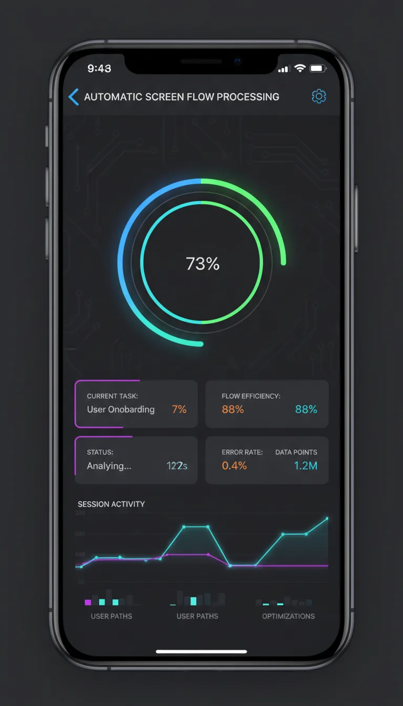
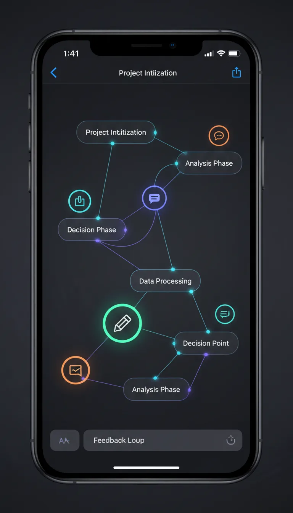
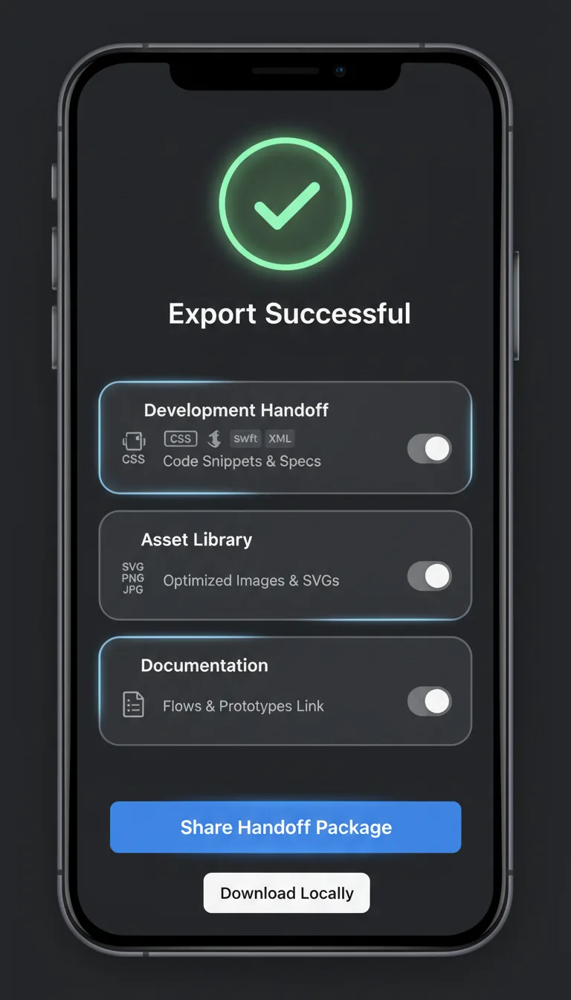

Capture
Record an app or import video and screenshots on your iPhone.
Record an app on iPhone. Flow Capture finds the meaningful screens, keeps feedback in context, and prepares the handoff.



Documenting a flow today means dozens of screenshots, cropping, renaming, and arranging. Flow Capture does the assembly for you.
Three steps from a live app to a package your team can open, review, and build from.
Record an app or import video and screenshots on your iPhone.
Duplicates and transitions are removed. Screens, comments, and branches stay in context.
Send one native package directly to Figma or your team's AI tools.
Enough context to understand the experience. No manual deck-building required.
Record an app or import video and screenshots. Meaningful states are extracted automatically.
Voice or text feedback stays structurally linked to the relevant screen of your flow.
Flow Map reveals user stages, branches, and later versions of the same journey.
Repeats and transitional frames are dropped. Only the meaningful states stay in the flow.
One ZIP works with your custom AI tools. Export a beautifully organized, editable board to Figma.
Processing runs on the device. No account is required to record, review, or export.
Keep the raw product journey completely private on your device until you choose to share it.
Anyone who needs to understand, document, or hand off how an app actually behaves.
Map real product flows in minutes and spot UI gaps instantly.
Turn narrated flows and design issues into AI-ready prompts and functional context.
Share rock-solid visual evidence and handoffs that engineering can follow.
Any app on your iPhone. Record it directly, or import an existing screen recording, a video, or a set of screenshots.
The recording is analyzed on the device. Repeated frames and transitions are removed, and the remaining states are kept in the order they happened. You review the result before exporting.
No. Processing runs locally, and no account is required. Nothing is uploaded unless you explicitly choose to share or sync.
A native export package that opens in Figma as an organized, editable board with your screens, order, branches, and comments.
Yes. The ZIP export bundles screens and your narration in a structure that works as context for your own AI workflows and prompts.
iPhone running iOS 18 or later, with a visual design tuned for iOS 26.
Record once. Understand more. Hand off without rebuilding the user story from scratch.
Download on the App StoreMade for iPhone · Local-first by design